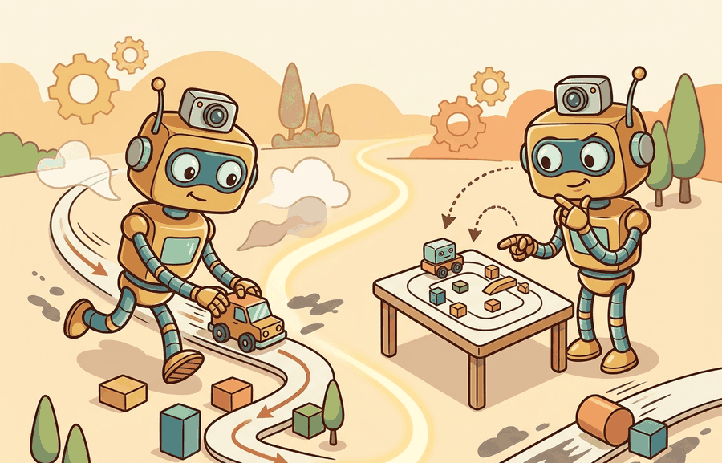

Section 14.4: Model-free vs. model-based; on- vs. off-policy

Figure 14.4A: Algorithm labels become useful when they reveal what is represented and whose data trained the update.
A Careful Control Loop
Big Picture
Model-free vs. model-based and on-policy vs. off-policy are two independent axes. One asks whether the learner represents dynamics; the other asks whether the data came from the policy being improved.
This section develops the technical contract for model-free vs. model-based learning and on-policy vs. off-policy data. First we define each axis, then we introduce discounted occupancy, then we compute how two policies can see different parts of the same environment.
The key question is practical: is the learner improving from its own fresh rollouts, from another policy's data, or from an explicit model of what the world will do next?
Action Is The Test
Model-free and model-based describe what the algorithm represents. On-policy and off-policy describe where the training data came from.
Theory
A model-free method estimates a policy, value function, or action-value function without explicitly learning $P(s'\mid s,a)$ for planning. A model-based method learns or uses a transition and reward model, then chooses actions by planning, imagination rollouts, or dynamic programming. In robot tasks, model-based methods can reduce physical samples, but learned models can compound small prediction errors across imagined steps.
An on-policy method updates a target policy using data generated by that same policy. An off-policy method learns about a target policy $\pi$ from data generated by a behavior policy $\mu$. Off-policy learning is attractive because embodied data are expensive, but the mismatch between $\mu$ and $\pi$ must be measured rather than waved away.
The discounted occupancy measure makes this mismatch concrete:
This quantity says how often policy $\pi$ visits each state-action pair when near-term visits receive more weight. If a dataset has high occupancy for careful approaches but the target policy wants fast contact-rich grasps, the dataset may contain too little evidence for the target behavior.
Mechanism
The mechanism is data distribution control. Model choice defines what the learner can predict or plan with; policy mismatch defines whether the collected evidence supports the policy being improved.
Worked Example
Code Fragment 1 computes a finite-horizon approximation to discounted occupancy for two policies in a two-state robot task. The behavior policy is cautious; the target policy is more aggressive about contact.
# Estimate discounted occupancy for behavior and target policies.
# The mismatch shows where off-policy data may undersupport learning.
gamma = 0.9
states = ["approach", "contact"]
actions = ["slow", "fast"]
policies = {
"behavior_mu": {"approach": {"slow": 0.8, "fast": 0.2}, "contact": {"slow": 0.7, "fast": 0.3}},
"target_pi": {"approach": {"slow": 0.3, "fast": 0.7}, "contact": {"slow": 0.2, "fast": 0.8}},
}
def next_state(state, action):
return "contact" if action == "fast" else state
for name, policy in policies.items():
state_distribution = {"approach": 1.0, "contact": 0.0}
occupancy = {(s, a): 0.0 for s in states for a in actions}
for t in range(5):
weight = (1 - gamma) * (gamma ** t)
next_distribution = {"approach": 0.0, "contact": 0.0}
for state, state_prob in state_distribution.items():
for action, action_prob in policy[state].items():
prob = state_prob * action_prob
occupancy[(state, action)] += weight * prob
next_distribution[next_state(state, action)] += prob
state_distribution = next_distribution
print(name, {f"{s}/{a}": round(v, 3) for (s, a), v in occupancy.items()})
The expected output shows the coverage mismatch directly in the occupancy mass. behavior_mu spends most of its discounted weight on cautious approach actions, while target_pi places much more mass on contact/fast, which is exactly where off-policy support becomes weakest.
Code Fragment 1: The occupancy calculation shows that `behavior_mu` collects much more `approach/slow` data, while `target_pi` spends more mass on `contact/fast`. This is the numeric reason off-policy training needs coverage checks, importance weighting, conservative objectives, or fresh rollouts.
The example also clarifies model-based learning. If a reliable model predicted the transition from `approach` to `contact`, the learner could plan contact behavior before trying every variant on hardware. If the model predicts contact poorly, planning amplifies the error.
Library Shortcut
In practical experiments, replay buffers and offline datasets make off-policy learning convenient, while simulators and learned world models make model-based planning possible. The engineering shortcut is useful only when the artifact records which policy produced each transition and which policy the update is evaluating.
Practical Recipe
Write the observation, action, and success metric before choosing a model.
Build a baseline that is simple enough to debug by inspection.
Add the library implementation only after the baseline behavior is understood.
Record failures as structured cases: perception error, state error, planning error, control error, or evaluation error.
Run at least one perturbation test before trusting the result.
Common Failure Mode
The common mistake in Model-free vs. model-based; on- vs. off-policy is to celebrate the component score before checking the closed-loop handoff. The failure usually appears at the boundary: stale state, wrong frame, delayed action, saturated actuator, or metric that ignores the real task cost.
Practical Example
A warehouse robot team can train a model-free value function from a replay buffer, then compare it with a model-based planner in the same simulator panel. The comparison is valid only if both methods are evaluated on the same starts, object poses, latency profile, and success definition.
Memory Hook
The replay buffer has a point of view. Off-policy learning starts by asking whose point of view it is.
Research Frontier
Offline RL and model-based robot learning remain active because real interaction is expensive. The frontier question is how to exploit large prior datasets and learned models while preventing policies from choosing actions whose occupancy is poorly covered by the data.
Self Check
Can you name the behavior policy, target policy, replay coverage, and whether the method plans with an explicit dynamics model? If not, the algorithm label is hiding the important assumption.
The two axes in this section answer different failure questions. If a model-based controller fails, inspect transition prediction, reward prediction, planning horizon, and model rollout error. If an off-policy learner fails, inspect whether the replay buffer actually covers the target policy's state-action occupancy.
For embodied agents, the strongest design often mixes categories. A system may learn a model for short-horizon contact prediction, learn a model-free value function for policy improvement, and use off-policy data from demonstrations. The label matters less than the evidence that each data source supports the update it is asked to make.
Two Independent Classification Axes
Axis
Option
Primary Audit Question
Representation
Model-free
Does the value or policy estimate generalize to the deployment states?
Representation
Model-based
Does the dynamics model stay accurate across planned horizons and contact regimes?
Data source
On-policy
Is fresh rollout data affordable and safe enough for the update?
Data source
Off-policy
Does replay coverage support the target policy's occupancy?
A robust implementation logs data provenance. Every transition should record the behavior policy, policy version, simulator or hardware source, reward version, and any model-generated rollout flag. Without those fields, an off-policy experiment cannot prove which distribution produced the evidence.
State whether the update is on-policy or off-policy.
State whether planning uses a learned, analytic, or simulator model.
Estimate occupancy coverage for important state-action regions.
Evaluate model rollout error separately from policy return.
Compare algorithms only on one environment panel and one metric definition.
When a model-based method fails, run one-step prediction checks before judging the planner. When an off-policy method fails, inspect the occupancy mismatch before tuning the loss. These two diagnostics isolate different root causes.
Evaluation Recipe
For model-free, model-based, on-policy, and off-policy comparisons, co-compute success, return, model error, replay coverage, and safety cost on one environment panel. Do not compare a model-based planner's best simulator result with an off-policy learner's separate hardware run.
Key Takeaway
Model-free versus model-based is about what the learner represents. On-policy versus off-policy is about which policy produced the data.
Exercise 14.4.1
Take a replay buffer from a cautious behavior policy and define a target policy that takes more contact-rich actions. List three state-action pairs whose occupancy you would audit before training off-policy.
What's Next?
This section made representation and data provenance explicit. Next, Section 14.5 explains why physical sample cost, reward proxies, and safety constraints make embodied RL unusually demanding.
References & Further Reading
Foundational Papers, Tools, and Practice References
This book remains the clearest reference for value functions, temporal difference learning, policy gradients, and exploration. For this section, connect the source to model-free vs. model-based; on- vs. off-policy and check the original resource before copying settings into a new experiment.
Puterman gives the formal MDP treatment behind Bellman equations and optimal policies. For this section, connect the source to model-free vs. model-based; on- vs. off-policy and check the original resource before copying settings into a new experiment.
The Gym paper introduced the interface pattern used by Gymnasium and many RL tutorials. For this section, connect the source to model-free vs. model-based; on- vs. off-policy and check the original resource before copying settings into a new experiment.
Gymnasium is the maintained environment API used throughout the chapter snippets. For this section, connect the source to model-free vs. model-based; on- vs. off-policy and check the original resource before copying settings into a new experiment.
MuJoCo is a central simulator for continuous-control RL and robot learning. For this section, connect the source to model-free vs. model-based; on- vs. off-policy and check the original resource before copying settings into a new experiment.